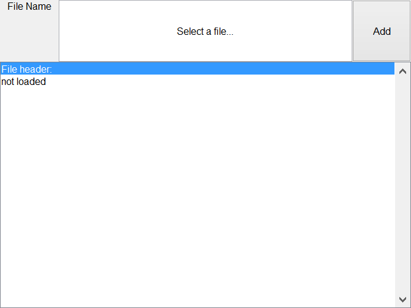

Contents
classdef load_file_settings_ui < handle
Properties
properties
Parent
MainObj
Name = 'Load File';
FilePath = [pwd filesep 'files'];
FileName = 'Source1.wav';
Info
UI
Tag = 'load_file';
end
Methods
methods
function obj = load_file_settings_ui(parent, mainObj)
if nargin == 0
obj.Parent = figure('Name',obj.Name,'NumberTitle','off','resize','on');
elseif nargin >= 1
if ishandle(parent)
obj.Parent = parent;
else
warning(['First argument needs to be a handle,'...
'new figure created.']);
obj.Parent = figure('Name',obj.Name,'NumberTitle','off','resize','on');
end
end
if nargin >= 2
obj.MainObj = mainObj;
else
obj.MainObj.DataBuffer = bf_data;
end
obj.UI = obj.graphicsCode();
end
BF_DATA Beamformer Audio Buffer. Has many functions to label the
channels and add data from different sources. The time indices of the
data in the buffer can be kept in sync using different methods.
BF_DATA(OBJ) create empty file object
BF_DATA(OBJ, MAINOBJ) create file object and add handle to main object
BF_DATA(OBJ, MAINOBJ, SOURCEID) create empty file object and set SourceID
BF_DATA(OBJ, MAINOBJ, SOURCEID, FILENAME) add file named fileName to object
BF_DATA(OBJ, MAINOBJ, SOURCEID, FILENAME, LOCATIONS) add file with locations
BF_DATA(OBJ, MAINOBJ, SOURCEID, FILENAME, LOCATIONS, CHANNAMES) add file with
locations and channel names
Example 1:
obj = bf_data
obj.setChanNames({'S1','S2','S3','S4'})
obj.setTotalSamples(100)
obj.addSamples([1;2;3;4;[5:100]'],'S3')
obj.getAudioData({'S3','S1'})
Example 2:
obj = bf_data
obj.setChanNames({'S1','S2','S3','S4'})
obj.addSamples([1;2;3;4;[5:100]'],'S1',1,25)
Example 3:
obj = bf_data
obj.setChanNames({'S1','S2','S3','S4'})
obj.setDelays(5,{'S2'})
obj.addSamples([1;2;3;4;[5:100]'],'S3',1)
BF_DATA Methods:
load - Load data from audio or matlab file.
save - Save data to audio or matlab file.
play - Play the data using an audio device.
setNChan - Set number of channels.
setTotalSamples - Set total number of samples.
setLocations - Set Channel Locations.
setChanNames - Set Channel Names.
setDelays - Set Delay Times.
addSamples - Add samples to the data.
getAudioData - Get samples out of buffer (time axes of channels agree).
resampleData - Resample data using matlab resample function
delayData - Delay data so when data is loaded the time axes agree.
names2inds - Get index of channel(s) in audiodata matrix
BF_DATA Properties:
FileName - Name of the audio file to save including extention
FilePath - Path of the audio file to save
SourceID - Identifier for source device or file in use.
Fs - Sampling Frequency in Hz
BitsPerSample - Number of Bits per audio Sample
NChan - Number of audio channels in File
Comment - Comment of audio file
Locations - Channel locations [x y z az el up]
ChanNames - Channel names
DelaySamples - Delays in samples for each channel
CurrentSample - Current sample for each channel. Used when adding
samples to the channel.
TotalSamples - Total length of the audio data in samples
IsInitialized - Has the source been correctly initialized
AudioData - Audio Data matrix size = [TotalSamples NChan]
Tag - Tag to find object
Written for the BSc graduation project Acoustic Enhancement via
Beamforming Using Smartphones.
Team: S. Bosma R. Brinkman
T. de Rooij R. Smeding
N. van Wijngaarden E. Wouters
Supervisor: Jorge Martínez Castañeda
Contact: E.H.Wouters@student.tudelft.nl
See also BF_DATA/LOAD, BF_DATA/SAVE, BF_DATA/PLAY, BF_DATA/ADDSAMPLES,
BF_DATA/SETNCHAN, BF_DATA/SETTOTALSAMPLES, BF_DATA/SETLOCATIONS,
BF_DATA/SETCHANNAMES, BF_DATA/SETDELAYS, BF_DATA/ADDSAMPLES,
BF_DATA/GETAUDIODATA, BF_DATA/RESAMPLEDATA, BF_DATA/DELAYDATA,
BF_DATA/NAMES2INDS, MITM, SITM, AUDIOREAD, AUDIOWRITE, SAVE, LOAD
Published output in the Help browser
showdemo bf_data
FilePath Add function
function pbFilePath_Callback(obj,~,~)
file1 = bf_data;
file1.FileName = [];
file1.load;
obj.UI.edFileName.String = file1.FileName;
if file1.IsInitialized
if isempty(strfind(file1.FileName,'.mat'))
obj.Info = audioinfo(fullfile(file1.FilePath,file1.FileName));
obj.UI.lbHeader.String = sprintf(['Audio file loaded'...
'\nTitle:\t', obj.Info.Title,...
'\nNumChannels:\t', mat2str(obj.Info.NumChannels),...
'\nSampleRate:\t', mat2str(obj.Info.SampleRate),...
'\nTotalSamples:\t', mat2str(obj.Info.TotalSamples),...
'\nDuration:\t', mat2str(obj.Info.Duration),...
'\nCompression:\t', obj.Info.CompressionMethod,...
'\nComment:\t', obj.Info.Comment,...
'\nArtist:\t', obj.Info.Artist,...
'\nBitsPerSample:\t', mat2str(obj.Info.BitsPerSample)]);
else
obj.UI.lbHeader.String = sprintf(['.mat file loaded'...
'\nTitle:\t', file1.SourceID,...
'\nNumChannels:\t', mat2str(file1.NChan),...
'\nSampleRate:\t', mat2str(file1.Fs),...
'\nTotalSamples:\t', mat2str(file1.TotalSamples),...
'\nDuration:\t', mat2str(file1.TotalSamples/file1.Fs),...
'\nCompression:\tbf_data',...
'\nComment:\t', file1.Comment,...
'\nArtist:\t', '-',...
'\nBitsPerSample:\t', mat2str(file1.BitsPerSample)]);
end
obj.MainObj.DataBuffer.addSamples(file1.AudioData,file1.ChanNames,1);
obj.MainObj.DataBuffer.setLocations(file1.Locations,file1.ChanNames);
else
obj.UI.lbHeader.String = 'No file selected';
end
clear file1
end
Load File Graphics Code
function UI = graphicsCode(obj)
m=7;n=5;
UI.txFileName = uicontrol(obj.Parent,'Style','text',...
'String','File Name','Units','Normalized',...
'Position',grid2pos([1,1, 1,1, m,n]));
UI.edFileName = uicontrol(obj.Parent,'Style','edit',...
'String','Select a file...','Units','Normalized',...
'Position',grid2pos([2,1, 5,1, m,n]));
UI.pbAdd = uicontrol(obj.Parent,'Style','pushbutton',...
'String','Add','Callback',@obj.pbFilePath_Callback,...
'Units','normalized','Position',grid2pos([7,1, 1,1, m,n]));
UI.lbHeader = uicontrol(obj.Parent,'Style','listbox',...
'Units','Normalized','Position',grid2pos([1,2, 1,4, 1,n]),...
'String',{'File header:','not loaded'});
end
ans =
load_file_settings_ui with properties:
Parent: [1x1 Figure]
MainObj: [1x1 struct]
Name: 'Load File'
FilePath: 'D:\android-beamforming\10 - Code\03 - Beamforming\BeamformG...'
FileName: 'Source1.wav'
Info: []
UI: [1x1 struct]
Tag: 'load_file'

end
end